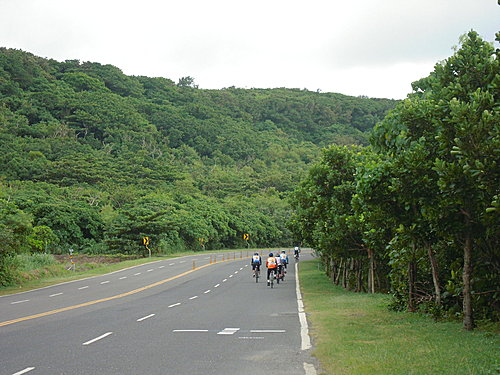
帕喬里(Rajendra Pachauri) ，
2007年諾貝爾獎得主、聯合國氣候變遷小組主席說 ：
「不吃肉，騎單車，少消費 ─ 這是你能幫助遏止全球暖化的方式」 。
為了整救地球，
如果要求自己不吃肉、少消費較困難的話，
加入河東獅自行車隊，
騎騎單車，
或許是你可以認真思考的選擇。
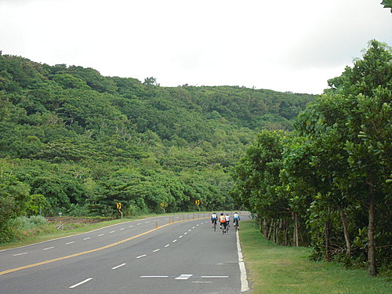
@.船帆石到鵝鑾鼻路段，
二旁綠意盎然，
是本次行程最美麗的景觀大道。
@真是美麗，再來一張
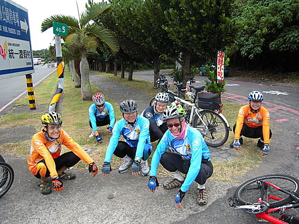
@長途騎乘屁股痛，是很多單車客共同的困擾，
單車學校 謝校長 教授的蛤蟆功
（蹲式練幼，狀似蛤蟆），
除可使肌肉消除疲勞外，
也可讓臀部內側通風散熱及暢通血行，
對消除屁股痛頗具功效。
SO，每當中途休息時，
我們不是搶坐路邊椅子休息，
而是一群人蹲在路旁練蛤蟆功，
畫面真是有趣。
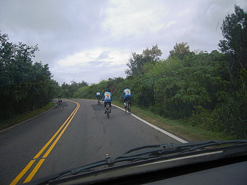
@從鵝鑾鼻上龍盤公園，
是今日行程最具挑戰性的爬坡路段。
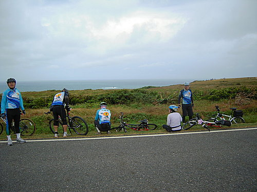
@龍盤公園綠地為席，眺望巴士海峽。
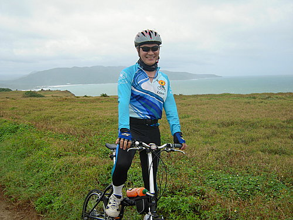
@帥哥與海1.
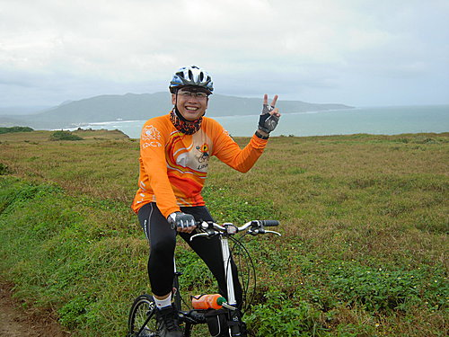
@帥哥與海2.
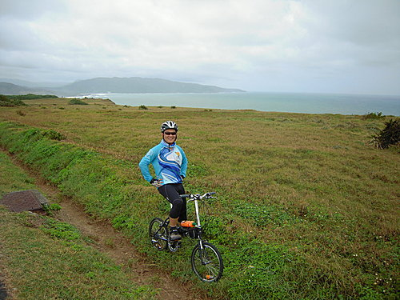
@帥哥與海3.
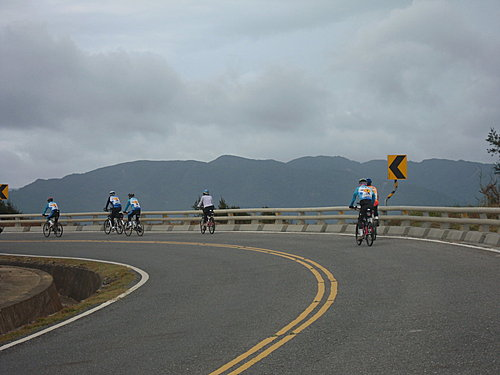
@奔向山丘
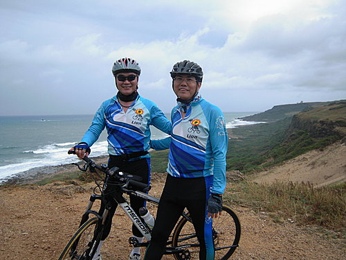
@富大推薦風吹沙最美麗的照相景點.
搭配河東獅最「MAN」的MODEL，
有沒有流星花園的FU呢？
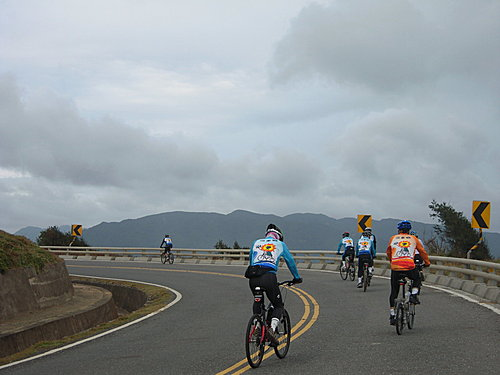
@UP！UP！UP！
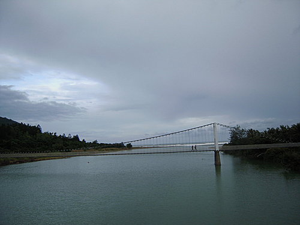
@港口吊橋位於滿洲鄉佳洛水入口處，
極富詩情畫意。
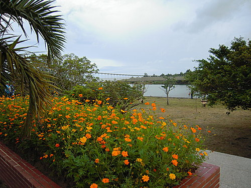
@地陪小鍾介紹滿洲鄉之四大特色作物，
椰子、玉米、地瓜、伯勞鳥。
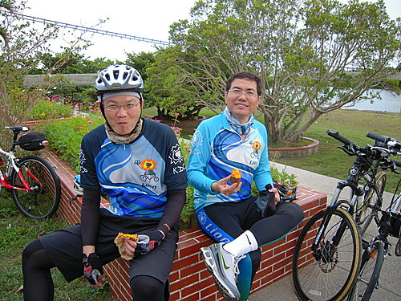
@小鍾招待大家品嘗在地四大美食之烤地瓜—
看1213之表情，就知是幸福的味道。
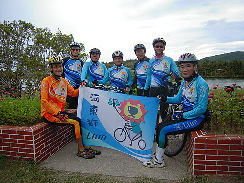@二度宣揚隊威
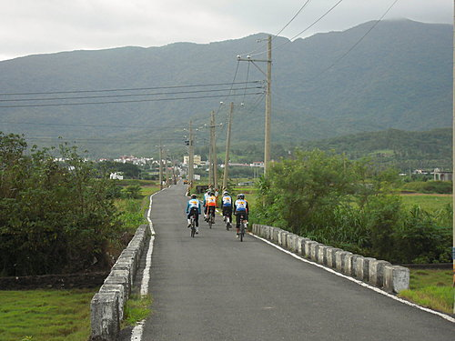
@悠遊滿州的田園風光
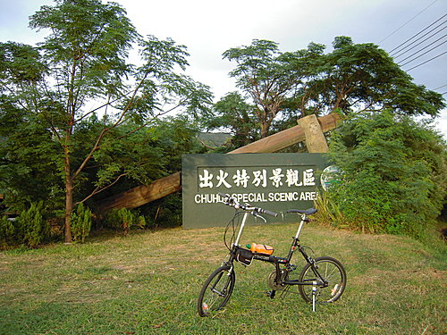
@終於到了終點站—出火
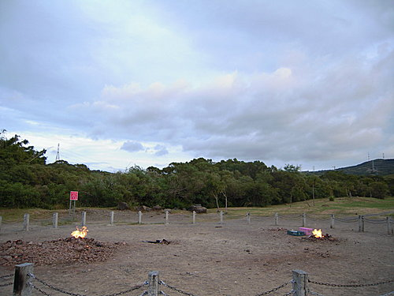
@出火現場景觀、歷史及地質介紹
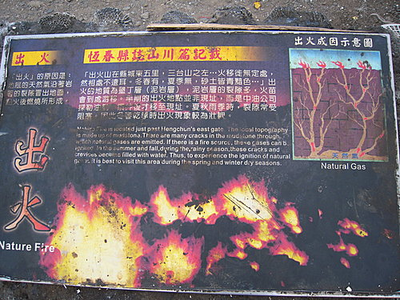
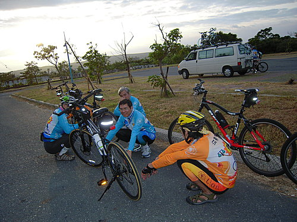
@再度團練蛤蟆功
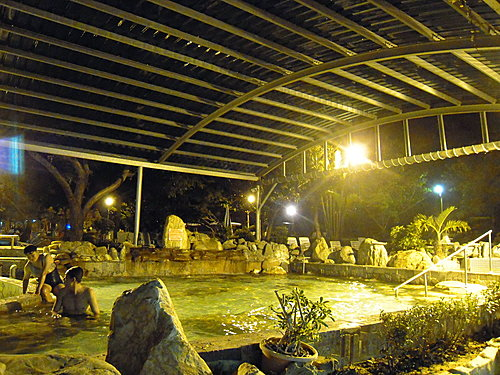
@前往四重溪溫泉泡湯SPA—準備明天的氣力
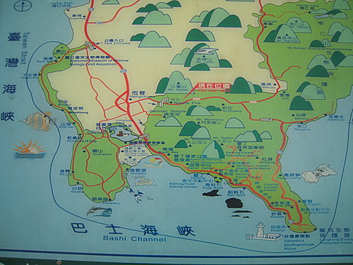
@騎乘路線圖：
車城熊家豬腳—海生館—萬里桐—紅柴坑—
龍鑾潭—南灣—小灣—船帆石—香蕉灣—
鵝鑾鼻—龍盤公園—風吹沙—滿洲港口—出火
總里程約62.5公里 。
@騎乘路線可點選下列超連結觀賞：